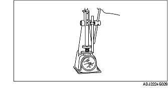
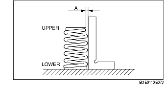

Valve spring inspection
1. Measure the spring height using a spring tester.

- Standard valve spring height
- When pressurized with spring force of 262.8 N {26.8 kgf, 59.0 lbf}, spring height is 27.5 mm {1.08 in}
2. Measure the amount of off-square on the valve spring using a square.

- (1) Rotate the valve spring one full turn and measure "A" at the point where the gap is the largest.